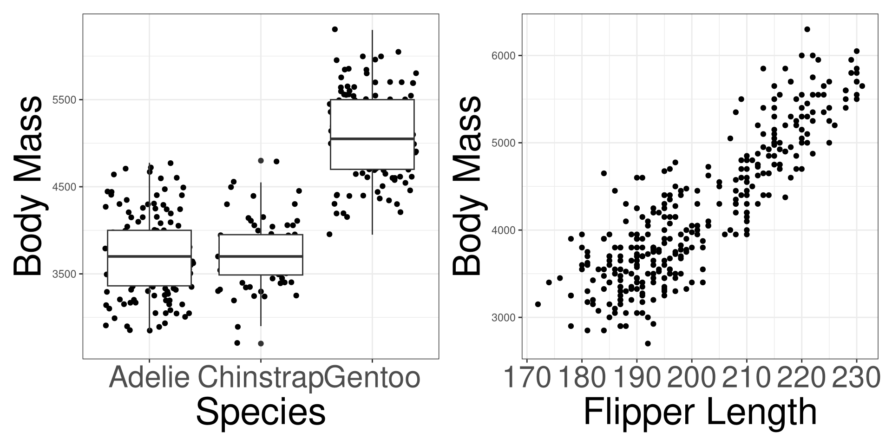
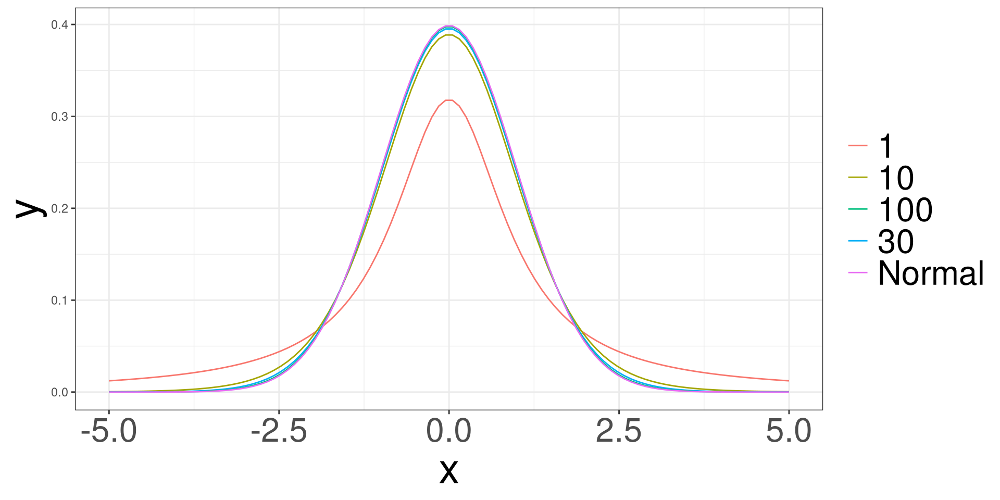

Inference with Linear Regression
Motivating Example
Motivating Example
Mathematical Models
\(\beta\) Hypothesis Testing
Model Hypothesis Testing
Model Assumptions
Motivating Example
Mathematical Models
Motivating Example
Mathematical Models
\(\beta\) Hypothesis Testing
Model Hypothesis Testing
Model Assumptions
Mathematical Models
Standard Normal Distribution
\[ {\frac{1}{\sqrt{2 \pi}}} e^{-\frac{1}{2}x^2} \]
Code
data.frame(x = seq(-5,5, length.out = 100),
y1 = dt(seq(-5,5, length.out = 100), 1),
y2 = dt(seq(-5,5, length.out = 100), 10),
y3 = dt(seq(-5,5, length.out = 100), 30),
y4 = dt(seq(-5,5, length.out = 100), 100),
y5 = dnorm((seq(-5,5, length.out = 100)))) |>
ggplot() +
# geom_line(aes(x, y1, color = "1")) +
# geom_line(aes(x, y2, color = "10")) +
# geom_line(aes(x, y3, color = "30")) +
# geom_line(aes(x, y4, color = "100")) +
geom_line(aes(x, y5)) +
ylab("y")
t Distribution
\[ \frac{\Gamma \left(\frac{v+1}{2}\right)}{\sqrt{\pi v}\Gamma\left(\frac{v}{2}\right)} \left(1 + \frac{x^2}{v}\right)^{-\frac{v+1}{2}} \]
Code
data.frame(x = seq(-5,5, length.out = 100),
y1 = dt(seq(-5,5, length.out = 100), 1),
y2 = dt(seq(-5,5, length.out = 100), 10),
y3 = dt(seq(-5,5, length.out = 100), 30),
y4 = dt(seq(-5,5, length.out = 100), 100),
y5 = dnorm((seq(-5,5, length.out = 100)))) |>
ggplot() +
geom_line(aes(x, y1, color = "1")) +
geom_line(aes(x, y2, color = "10")) +
geom_line(aes(x, y3, color = "30")) +
geom_line(aes(x, y4, color = "100")) +
geom_line(aes(x, y5, color = "Normal")) +
ylab("y")
\(\beta\) Hypothesis Testing
Motivating Example
Mathematical Models
\(\beta\) Hypothesis Testing
Model Hypothesis Testing
Model Assumptions
Hypothesis
\[H_0: \beta = \theta\]
\[H_0: \beta \ne \theta\]
Testing \(\beta_j\)
\[ T = \frac{\hat\beta_j-\theta}{\mathrm{se}(\hat\beta_j)} \sim t_{n-p^\prime} \]
- \(n\): sample size
- \(p^\prime\): number of \(\beta\)s
P-Value
| Alternative Hypothesis | p-value |
|---|---|
| \(\beta>\theta\) | \(P(\hat\beta >T)=p\) |
| \(\beta<\theta\) | \(P(\hat\beta < T)=p\) |
| \(\beta\ne\theta\) | \(2\times P(\hat\beta >|T|)=p\) |
Confidence Intervals
\[ \hat \beta_j \pm CV \times se(\hat\beta_j) \]
\(CV\): Critical Value \(P(X<CV) = 1-\alpha/2\)
\(\alpha\): significance level
\(se\): Standard Error Function
Conducting HT of \(\beta_j\)
Example
#>
#> Call:
#> lm(formula = body_mass_g ~ species + flipper_length_mm, data = penguins)
#>
#> Residuals:
#> Min 1Q Median 3Q Max
#> -898.8 -252.0 -24.8 229.8 1191.6
#>
#> Coefficients:
#> Estimate Std. Error t value Pr(>|t|)
#> (Intercept) -4013.18 586.25 -6.846 3.74e-11 ***
#> speciesChinstrap -205.38 57.57 -3.568 0.000414 ***
#> speciesGentoo 284.52 95.43 2.981 0.003083 **
#> flipper_length_mm 40.61 3.08 13.186 < 2e-16 ***
#> ---
#> Signif. codes: 0 '***' 0.001 '**' 0.01 '*' 0.05 '.' 0.1 ' ' 1
#>
#> Residual standard error: 373.3 on 329 degrees of freedom
#> Multiple R-squared: 0.787, Adjusted R-squared: 0.7851
#> F-statistic: 405.3 on 3 and 329 DF, p-value: < 2.2e-16Confidence Interval
Example
Model Hypothesis Testing
Motivating Example
Mathematical Models
\(\beta\) Hypothesis Testing
Model Hypothesis Testing
Model Assumptions
Model inference
We conduct model inference to determine if different models are better at explaining variation. A common example is to compare a linear model (\(\hat Y=\hat\beta_0 + \hat\beta_1 X\)) to the mean of Y (\(\hat \mu_y\)). We determine the significance of the variation explained using an Analysis of Variance (ANOVA) table and F test.
Model Inference
Given 2 models:
\[ \hat Y = \hat\beta_0 + \hat\beta_1 X_1 + \hat\beta_2 X_2 + \cdots + \hat\beta_p X_p \]
or
\[ \hat Y = \bar y \]
Is the model with predictors do a better job than using the average?
ANOVA
ANOVA Table
| Source | DF | SS | MS | F |
|---|---|---|---|---|
| Model | \(DFR=k-1\) | \(SSR\) | \(MSR=\frac{SSM}{DFR}\) | \(\hat F=\frac{MSR}{MSE}\) |
| Error | \(DFE=n-k\) | \(SSE\) | \(MSE=\frac{SSE}{DFE}\) | |
| Total | \(TDF=n-1\) | \(TSS=SSR+SSE\) |
\[ \hat F \sim F(DFR, DFE) \]
Conducting an ANOVA in R
Example
#>
#> Call:
#> lm(formula = body_mass_g ~ species + flipper_length_mm, data = penguins)
#>
#> Residuals:
#> Min 1Q Median 3Q Max
#> -898.8 -252.0 -24.8 229.8 1191.6
#>
#> Coefficients:
#> Estimate Std. Error t value Pr(>|t|)
#> (Intercept) -4013.18 586.25 -6.846 3.74e-11 ***
#> speciesChinstrap -205.38 57.57 -3.568 0.000414 ***
#> speciesGentoo 284.52 95.43 2.981 0.003083 **
#> flipper_length_mm 40.61 3.08 13.186 < 2e-16 ***
#> ---
#> Signif. codes: 0 '***' 0.001 '**' 0.01 '*' 0.05 '.' 0.1 ' ' 1
#>
#> Residual standard error: 373.3 on 329 degrees of freedom
#> Multiple R-squared: 0.787, Adjusted R-squared: 0.7851
#> F-statistic: 405.3 on 3 and 329 DF, p-value: < 2.2e-16Model Inference
Model inference can be extended to compare models that have different number of predictors.
Model Inference
Given:
\[ M1:\ \hat y = \beta_0 + \beta_1 X_1 + \beta_2 X_2 \]
\[ M2:\ \hat y = \beta_0 + \beta_1 X_1 \]
Let \(M1\) be the FULL (larger) model, and let \(M2\) be the RED (Reduced, smaller) model.
Model Inference
He can test the following Hypothesis:
- \(H_0\): The error variations between the FULL and RED model are not different.
- \(H_1\): The error variations between the FULL and RED model are different.
Test Statistic
\[ \hat F = \frac{[SSE(RED) - SSE(FULL)]/[DFE(RED)-DFE(FULL)]}{MSE(FULL)} \]
\[ \hat F \sim F[DFE(RED) - DFE(FULL), DFE(FULL)] \]
ANOVA in R
Example
Code
#> Analysis of Variance Table
#>
#> Model 1: body_mass_g ~ island + flipper_length_mm
#> Model 2: body_mass_g ~ species + island + flipper_length_mm
#> Res.Df RSS Df Sum of Sq F Pr(>F)
#> 1 329 47774435
#> 2 327 45552857 2 2221579 7.9738 0.0004157 ***
#> ---
#> Signif. codes: 0 '***' 0.001 '**' 0.01 '*' 0.05 '.' 0.1 ' ' 1Model Assumptions
Motivating Example
Mathematical Models
\(\beta\) Hypothesis Testing
Model Hypothesis Testing
Model Assumptions
Model Assumptions
When we are conducting inference linear regression, we will have to check the following conditions:
- Linearity
- Independence
- Normality
- Equal Variances
- Multicollinearity (for MLR)
Linearity
Probably considered the most important assumption, but there must be a linear relationship between both the outcome variable (y) and a set of predictors (\(x_1\), \(x_2\), …).
Independence
The data points must not influence each other.
Normality
The model errors (also known as residuals) must follow a normal distribution.
Equal Variances
The variability of the data points must be the same for all predictor values.
Residuals
Residuals are the errors between the observed value and the estimated model. Common residuals include
Raw Residual
Standardized Residual
Jackknife (studentized) Residuals
Influential Measurements
Influential measures are statistics that determine how much a data point affects the model. Common influential measures are
Leverages
Cook’s Distance
Raw Residuals
\[ \hat r_i = y_i - \hat y_i \]
Residual Analysis
A residual analysis is used to test the assumptions of linear regression.
QQ Plot
A qq (quantile-quantile) plot will plot the estimated quantiles of the residuals against the theoretical quantiles from a normal distribution function. If the points from the qq-plot lie on the \(y=x\) line, it is said that the residuals follow a normal distribution.
Residual vs Fitted Plot
This plot allows you to assess the linearity, constant variance, and identify potential outliers. Create a scatter plot between the fitted values (x-axis) and the raw/standardized residuals (y-axis).
Variance Inflation Factor
The variance inflation factor is a measurement on how much variables are collinear with each other. A value greater than 10 is a cause for concern and action should be taken.
Residual Analysis in R
Use the resid_df function to obtain the residuals of a model.
Residual vs Fitted Plot
QQ Plot
Example